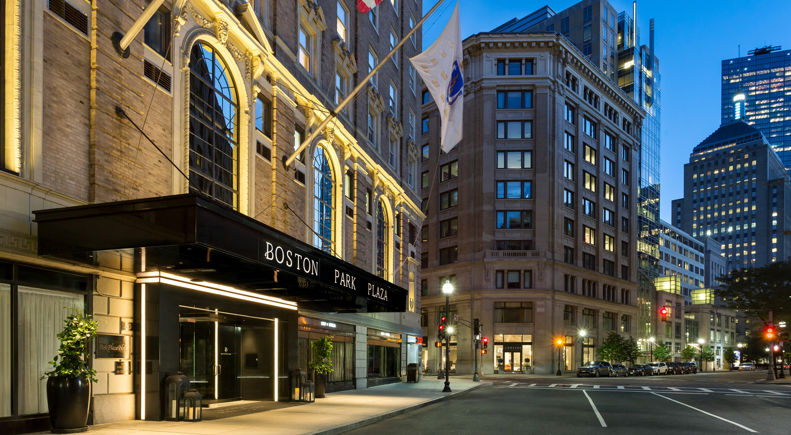
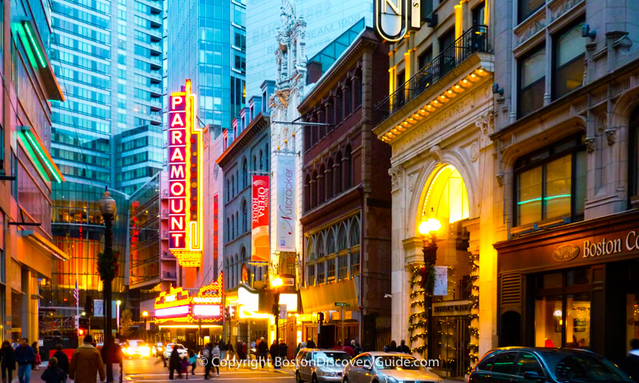

Stays
In Boston, whether you want to catch a game at fenway, or a performance at the symphony, there are plenty of amazing locales at which you can rest your head. Boston offers all sorts of options for weekend gateaways and weekday excursions. Start planning your trip and click below to see some of bostons best stays.
Attractions
Boston might be a smaller city than other american cities you may know about, but it makes up for it in its diversity of options and things to keep you busy. When you're in boston you'll never run out of exciting activities to get in to. You can take your time and explore the green area that covers the city, or you can visit one of many Boston museums and learn something new about art, history or even science. Click below to get an ideae of what awesome attractions awaits you in Beantown.


Night Life
When people think of Boston, they don't often think of a bustling night life, but believe you me, boston has exactly that. Whether its a fun night at the arcade or boowling alley you're up for, a groovy night down at one of bostons many night clubs. You can find it all and more in bostons many night life options. From bars, to arcades and clubs, all and more are at your fingertips each and every night. If you want to know where you should head this evening, click the button below.